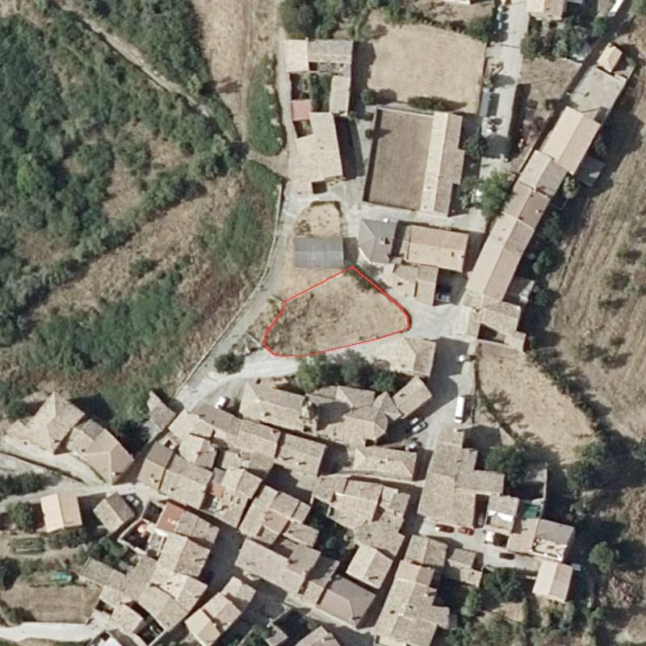
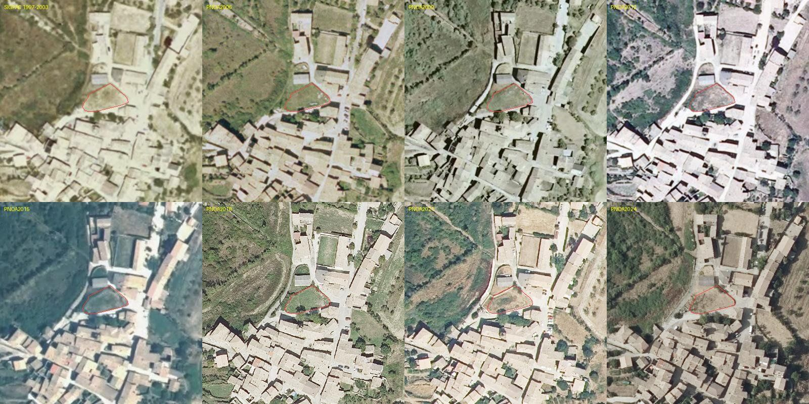

0 · Resumen ejecutivo
- Qué es: solar urbano de 625 m² (Catastro; 620 m² medidos) en el borde norte del casco de Fuencalderas, C/ Aire 2, nunca edificado (vacío en todas las ortofotos 1997–2024), en forma de pentágono de ≈ 40 × 22 m con dos frentes a viales (sur y oeste) y una casa medianera al norte.
- Legal: suelo urbano consolidado, uso residencial (PGOU Biel 2014, plano NPO02B). Se puede edificar con licencia municipal directa. Ordenanza previsible: Casco Antiguo (edificabilidad 2,5 m²/m², ocupación 80 %, PB+2 y 10 m, fondo edificable 15 m, alineación a calle, materiales tradicionales). A confirmar con informe urbanístico (§2).
- Terreno: areniscas y lutitas miocenas (Fm. Uncastillo), pendiente media 8° hacia el SSE, 835–837 m. Cimentación normal sobre roca/arenisca con zapatas o losa; hay que ensayar la expansividad de la lutita. Sin riesgo de inundación ni deslizamiento; sismicidad baja (§3).
- Incendio: la parcela está dentro de la Zona de Alto Riesgo tipo 1 y linda al oeste con matorral. Condiciona el diseño (envolvente incombustible, franja de 25 m, aljibe, plan de autoprotección) y el seguro, no la viabilidad (§4).
- Solar: 1.508 kWh/kWp·año a sur. Una cubierta de 12 × 9 m con cumbrera E-W admite 9–10 kWp por faldón; con la regla de «no visible desde vía pública» del Casco Antiguo el faldón útil puede ser el norte (≈ 950 kWh/kWp): 4–5 kWp «legales» dan 4.500–6.000 kWh/año, suficiente para la vivienda; hasta 20 kWp físicamente (§5).
- Diseño: la casa debe apoyarse en la alineación de C/ Aire (o del camino oeste); quedar exenta por los demás lados es legal (no es «edificación aislada» en el sentido del art. 46) pero obliga a tratar todas las caras como fachada. Huella máxima ≈ 500 m² por planta (rectángulo 26 × 15 m = 390 m²); el camino oeste no impone retranqueo en suelo urbano, y el Cordel de Agüero a Biel pasa a 18 m del lindero norte (pedir certificado de no afección) (§8).
- Precio objetivo: valor de mercado del solar 12.000–20.000 € (20–32 €/m²); oferta inicial ≈ 10.000 €, precio objetivo 14.000–16.000 €, tope 22.000 €. El coste total de casa nueva de 120 m² ronda 210.000–270.000 € (§6).
1 · La parcela


| Dato | Valor | Fuente |
|---|---|---|
| Referencia catastral | 3621102XM7932B (parcela urbana; manzana 36211, parcela 02) | Catastro |
| Dirección | CL Aire 2, Fuencalderas (Biel), 50619 | Catastro INSPIRE AD |
| Superficie | 625 m² (catastral) · 620 m² (calculada) · perímetro 102 m | Catastro INSPIRE CP |
| Forma | Pentágono irregular; rectángulo envolvente 40,4 × 21,6 m; frentes: sur ≈ 17 + 4 m (C/ Aire), oeste ≈ 20 + 9 m (pista), norte 22 m medianera con 3621101, este 9 m | geometría |
| Edificación | Ninguna registrada. Ortofotos 1997–2024: vacía | Catastro BU · IGN |
| Cota / pendiente | 835–837 m; pendiente media 8,4° (máx. 24° en el talud oeste); orientación SSE (162°) | MDT IGN 2 m |
| Clasificación | SU-C, uso residencial, núcleo Fuencalderas (los 14 vértices dentro del SU-C) | SIUa / PGOU 2014 |
| Protecciones | Fuera del Paisaje Protegido, de MUP y LIC; el SNU-E (LIC Sierras de Santo Domingo) empieza al NW, a ~60 m. Vía pecuaria: el eje del Cordel de Agüero a Biel (anchura legal 37,5 m, sin deslindar, fiabilidad baja del trazado) pasa a 18 m del lindero norte, por la calle/era al norte de la casa vecina: su franja teórica alcanzaría ≈ 1 m del borde norte del solar | SIUa · Gobierno de Aragón (VVPP) |
| Riesgos | Inundación BAJA (no hay cauce; la más próxima ALTA está a 3,5 km); colapso y deslizamiento MUY BAJA; ZAR incendio tipo 1 ALTO | Gobierno de Aragón 2011 / 2017 |
| Colindantes | N: 3621101 (C/ San Miguel 1, casa 1960, 101 m², 1 planta). A < 6 m: C/ Aire 1 (1970, 2 pl.), C/ Arrabal 1, 3 y 7, C/ San Miguel 2, el edificio público de C/ Iglesia 4-6 (1910/1970). W: rústica 112/58 (7.674 ha… 7.674 m², matorral, sin edificios) | Catastro |
Contexto del pueblo (radio 450 m): 113 parcelas urbanas, 95 edificios, 91 viviendas, 18 solares sin edificar, 11 edificios en ruina o deteriorados, año mediano de construcción 1970; parcela mediana 94 m² (esta es 6,6 veces mayor; sólo hay una parcela urbana más grande). 26 habitantes empadronados (2025). Servicios: red de agua de la ELM (tasa anual), electricidad (línea 15 kV Fuencalderas–Agüero renovada 2023), recogida de residuos (60 €/año); fibra: verificar (Biel la tiene). Distancias: Biel 8 km, Ayerbe 22 km, Ejea 45 km, Huesca 75 km, Zaragoza 100 km.
2 · Qué se puede construir: legislación aplicable
Régimen: suelo urbano consolidado (TRLUA art. 12; PGOU Simplificado de Biel, aprobado por el CPU en 2014). Derecho a edificar con licencia urbanística municipal (Ayuntamiento de Biel; ICIO 2 % + tasa), sin cesiones ni reparcelación, con el deber de completar la urbanización que falte (acometidas, acera). No hace falta autorización del CPU ni evaluación ambiental.
Ordenanza de zona
El plano NPO02B del PGOU asigna a cada manzana una zona. El núcleo histórico de Fuencalderas es Casco Antiguo; las zonas Ensanche y Vivienda unifamiliar se delimitaron sobre todo en Biel. Como esta parcela está en el borde («zona periférica»), conviene confirmar la zona con un informe urbanístico (Ayuntamiento, 0–60 €). Las dos hipótesis:
| Parámetro | Casco Antiguo (arts. 45–48) | Ensanche (49–53) | Vivienda unifamiliar 2 (59–63) |
|---|---|---|---|
| Edificabilidad | 2,5 m²/m² → 1.562 m² (teórica) | 2 m²/m² → 1.250 m² | 0,6 m²/m² → 375 m² |
| Ocupación máxima | 80 % (PB 100 %) → 500 m² | 80 % → 500 m² | 30 % → 187 m² |
| Altura | 10 m, PB+2 (3 plantas) | 10 m, PB+2 | 7 m, PB+1 |
| Fondo edificable | 15 m desde la alineación | 15 m | 15 m |
| Parcela mínima / frente | 90 m² / 5 m (cumple) | 150 m² / 6,5 m | 225 m² |
| Posición | Alineada a calle; edificación aislada prohibida | Alineada | Aislada o pareada, retranqueos |
| Usos | Vivienda uni/plurifamiliar, talleres ≤ 5 CV, hostelería ≤ 100 plazas, comercio | Ídem | Vivienda unifamiliar |
Condiciones estéticas (art. 48, Casco Antiguo; similares en las otras zonas)
- Cubierta inclinada 30–40 % de teja curva cerámica color pardo (se recomienda teja recuperada); a dos aguas sobre muros piñón; aleros de madera con canes y tablazón, vuelo 0,45–0,70 m; chimeneas no pirenaicas; sin áticos ni buhardillas sobre la altura máxima.
- Fachadas de mampostería o sillería de piedra, o revoco pintado en tonos ocres; prohibidos los aplacados. Carpintería de madera barnizada oscura; rejería de forja maciza.
- Huecos verticales, ≤ 30 % de la superficie de fachada; balcones ≤ 45 cm de vuelo, sin balcones corridos.
- Placas solares: sólo donde no sean visibles desde el espacio público (Casco Antiguo); en Ensanche/VU, ≤ 40 % de la cubierta y teja parda obligatoria.
- Planta baja ≤ 4 m libres; alineación oficial y rasante de la calle.
Vivienda de ejemplo
Casa de 12 × 9 m (108 m² de huella, 17 % de ocupación) en dos plantas (216 m² construidos) alineada al frente sur (C/ Aire) o al oeste, cumbrera paralela al frente, cubierta a dos aguas al 35 %, muros de piedra o revoco ocre, y el resto del solar como patio/huerto al este y al norte. Cabe también una casa de 15 × 10 m en PB+2 (450 m²) o dos viviendas pareadas; el límite real no es la edificabilidad sino el fondo de 15 m, la altura y el presupuesto. Con ≥ 2 viviendas o local, plaza de aparcamiento por vivienda según normativa. Plazos: proyecto básico y de ejecución 3–4 meses; licencia 1–3 meses; obra 10–14 meses.
3 · Geología y geotecnia: ¿se puede cimentar?
| Fuente | Dato en la parcela |
|---|---|
| IGME MAGNA 50 (hoja 208 Uncastillo, unidad 22) | Areniscas y lutitas (Fm. Uncastillo) |
| IGME GEODE (unidad 128) | Areniscas, lutitas y conglomerados, Rambliense–Aragoniense medio (Mioceno) |
| IGME litoestratigráfico 1:200.000 | Alternancia de areniscas y lutitas, localmente conglomerados; permeabilidad baja |
| IGME arcillas expansivas 1:1.000.000 | Arcillas expansivas localmente predominantes en zona con déficit de humedad: riesgo moderado-alto (aviso regional, no medida local) |
| Aragón · susceptibilidad | Deslizamiento MUY BAJA (sustrato roca), colapso MUY BAJA, inundación BAJA |
| IGME BD MOVES | 0 movimientos inventariados en el término |
| IGN MDT 2 m | 836 m; pendiente media 8,4°, máxima 24° en el talud del borde oeste; perfil E-W: la parcela es la cresta local (830 → 836 → 831 m en 150 m) |
| IGN peligrosidad sísmica | PGA 0,06 g (475 años); ab < 0,04 g: NCSE-02 no exige medidas para vivienda |
Interpretación. La parcela está sobre el sustrato rocoso terciario que forma la loma del pueblo, no sobre rellenos ni aluvial. Las areniscas dan una capacidad portante buena (típicamente 3–6 kg/cm² en roca sana); las lutitas intercaladas meteorizan en los primeros 1–2 m a una arcilla limosa que puede ser expansiva (hinchamiento con la lluvia, retracción en verano), y esa es la única incógnita geotécnica real. Consecuencias de diseño:
- Cimentación por zapatas corridas o losa empotradas hasta la arenisca o hasta 1,0–1,5 m bajo la cota de meteorización; si el geotécnico confirma arcilla expansiva con presión de hinchamiento > 0,5 kg/cm², losa rígida o pozos hasta roca y lámina drenante. Sobrecoste típico 3.000–8.000 €.
- Drenaje perimetral y evitar que el agua de la cubierta descargue junto a la cimentación (regla de oro en lutitas).
- El talud oeste (hasta 24°) hacia la pista queda fuera de la huella propuesta; construir en la meseta este/sur, y no descargar rellenos sobre el talud.
- Explanación mínima: la parcela cae 1,9 m en 40 m (sur más alto que norte, 837 → 835 m). Un desmonte de 0,5–1 m en la parte alta nivela la planta baja.
- El estudio geotécnico es obligatorio (CTE DB-SE-C): vivienda de 2 plantas = tipo C-1 en terreno T-1: 2–3 puntos de reconocimiento (catas o penetrómetro + un sondeo corto), ensayos de identificación y de hinchamiento Lambe. Coste 900–1.800 € con desplazamiento. Encargarlo antes de la escritura si el precio lo justifica, o condicionar la compra.
- Radón: el mapa del CTE DB-HS6 sitúa el norte de Zaragoza mayoritariamente en zona 0–1; comprobar el municipio en la tabla del DB-HS6 (barrera antirradón en solera si es zona 1: coste bajo).
4 · Incendios forestales: cómo condiciona la ZAR
La parcela cae dentro de un polígono de Zona de Alto Riesgo tipo 1 de la Orden DRS/1521/2017 (el casco consolidado es ZMR tipo 6, medio) y linda al oeste y noroeste, a 3–10 m, con «matorral, forestal no arbolado» del mapa forestal de Aragón; al norte, cultivo. Es la interfaz urbano-forestal clásica de los pueblos de Santo Domingo. Implicaciones:
| Norma | Exigencia | Efecto en este solar |
|---|---|---|
| CTE DB-SI, sección SI 5 (entorno de los edificios) | Zonas edificadas limítrofes con área forestal: franja de 25 m de anchura libre de vegetación que propague el fuego (arbolado aclarado, sin matorral continuo) y vial perimetral de 5 m; accesibilidad de bomberos. | La franja de 25 m se extiende sobre la pista y la parcela rústica 112/58 (ajena) y el monte al NW. Sólo se puede gestionar dentro del solar (mantener el patio limpio) y pidiendo al Ayuntamiento/ELM la gestión de la interfaz (obligación municipal en ZAR, Ley 43/2003 art. 44 y Ley 15/2006 de Aragón). Situar la casa en la mitad este/sur maximiza la distancia al matorral (25–35 m). |
| Directriz básica de incendios forestales (RD 893/2013) y Ley 15/2006 de Montes de Aragón | Edificaciones y urbanizaciones en ZAR: plan de autoprotección, medidas de prevención propias, obligación de mantener la franja; restricciones al uso del fuego y maquinaria en época de peligro (junio–octubre). | Redactar el plan de autoprotección con el proyecto (500–1.500 €); prever agua de extinción: aljibe o depósito de 5–10 m³ con toma de bombero (2.000–4.000 €), útil además para riego y como reserva. |
| Orden anual de prevención de incendios (Gobierno de Aragón) | Prohibición de quemas, barbacoas y trabajos con chispa en ZAR en época de peligro sin autorización. | Condiciona la fase de obra (soldadura, radial) en verano: planificar los trabajos exteriores fuera de junio–octubre o con permiso. |
| Buenas prácticas de diseño (guías Aragón/MITECO) | Envolvente incombustible (piedra, revoco, teja), evitar madera vista en aleros y persianas del lado forestal o usar madera tratada/clase B-s1,d0, rejillas de ventilación con malla ≤ 3 mm contra pavesas, sin depósitos de leña o GLP junto a la fachada W, ventanas con vidrio templado en el lado W. | Compatible con la ordenanza del Casco Antiguo (piedra y teja son incombustibles); los aleros de madera exigidos por el art. 48 se resuelven con madera ignifugada o con el alero mínimo (0,45 m) y forro incombustible en la cara W. |
| Seguros | Las aseguradoras aplican recargo o exclusiones por interfaz forestal en ZAR. | Prima de hogar +10–30 %; documentar las medidas (franja, aljibe, materiales) para negociarla. |
Coste añadido total por incendio: 4.000–9.000 € (aljibe, plan de autoprotección, carpintería y rejillas del lado oeste, madera tratada), 2–4 % del presupuesto. Ubicación: casa pegada al frente sur/este, patio y huerto hacia el oeste como cortafuegos propio, sin seto de ciprés ni leñera junto al matorral. Ventaja: la pista del oeste y el vial sur son ya el «vial perimetral» que pide el CTE.
5 · Fotovoltaica: legislación y potencial
Marco legal
- Autoconsumo (RD 244/2019, Ley 24/2013): instalaciones ≤ 100 kW con compensación simplificada de excedentes (el sobrante se descuenta en la factura hasta el importe de la energía consumida; no se paga el excedente adicional). Con ≤ 15 kW en suelo urbanizado no hace falta permiso de acceso y conexión; ≤ 100 kW no necesita autorización administrativa previa.
- Tramitación en Aragón: las instalaciones de autoconsumo sobre cubierta de edificios se tramitan por declaración responsable ante el Ayuntamiento (no licencia de obras) y registro en el Servicio Provincial de Industria; verificar el trámite vigente en el momento de ejecutar.
- Bonificaciones: el Ayuntamiento de Biel bonifica el 50 % del ICIO en obras con energía solar (ordenanza 2013); no consta bonificación de IBI (pedirla).
- PGOU Biel: en Casco Antiguo (art. 48) sólo se admiten placas no visibles desde el espacio público; en Ensanche/VU (arts. 53, 58, 63) hasta el 40 % de la cubierta. En la práctica se acepta integración en el plano de cubierta con módulos oscuros sin marco; conviene consultar al Ayuntamiento con un fotomontaje.
- Conexión: la red del pueblo es probablemente monofásica en baja tensión; por encima de ~5 kW de inversor la distribuidora (e-distribución) suele exigir trifásica o limitar la potencia de vertido. Consultar el punto de conexión antes de dimensionar.
Recurso solar en la parcela (PVGIS 5.2, base SARAH2, con horizonte real, pérdidas 14 %)
| Orientación / inclinación | kWh por kWp y año | Comentario |
|---|---|---|
| Óptima (sur, 38°) | 1.511 | Máximo local |
| Sur 35° · sur 20° | 1.508 · 1.452 | Faldón sur de cubierta al 35 % (19°) ≈ 1.440 |
| Sureste / suroeste 35° | 1.416 · 1.409 | Cumbrera girada ±45°: pérdida del 6 % |
| Este / oeste 35° | 1.176 · 1.164 | Cumbrera N-S |
| Horizontal | 1.255 | |
| Norte 20° | 947 | El faldón «no visible» en una casa alineada al sur |
Horizonte: la sierra al norte y las lomas al sur tapan menos de 5° en todas las direcciones (el sur está libre hasta 1°), por lo que no hay sombras topográficas relevantes; la casa medianera del norte (1 planta) tampoco sombrea. Producción mensual a sur 35°: 95–101 kWh/kWp en noviembre–febrero y 150–168 en mayo–agosto; la relación verano/invierno es 1,7, favorable a la bomba de calor.
Modelo sobre la cubierta de ejemplo
Casa 12 × 9 m, cubierta a dos aguas al 35 % con cumbrera paralela al frente sur: cada faldón mide 12 × 4,76 = 57 m²; con módulos de 215 W/m² (paneles de 430–450 W, 1,95 m²) y un 85 % de aprovechamiento, 10,4 kWp por faldón.
| Escenario | Potencia | Producción anual | Cobertura de 4.500 kWh |
|---|---|---|---|
| Casco Antiguo estricto: sólo faldón norte (no visible desde C/ Aire) | 10,4 kWp (o 4–5 kWp razonables) | ≈ 9.900 kWh (4–5 kWp: 3.800–4.700) | La cobertura real del consumo con excedentes compensados es del 50–70 % sin batería; con batería de 10 kWh, 80–90 % |
| Integración aceptada / zona Ensanche-VU con 40 % de cubierta: faldón sur | 40 % × 114 m² × 215 W = 9,8 kWp en el faldón sur | ≈ 14.100 kWh | Excedente triple del consumo: sólo compensa con vehículo eléctrico, bomba de calor o dos viviendas |
| Máximo físico: ambos faldones al 85 % | 20,8 kWp | ≈ 24.900 kWh (14.900 sur + 9.900 norte) | Fuera de la compensación simplificada útil; exigiría trifásica y no tiene sentido económico |
| Alternativa: cumbrera N-S (faldones E y W) | 2 × 10,4 kWp | ≈ 12.200 + 12.100 kWh | Ambos faldones «laterales» son más defendibles como no visibles; producción total 24 MWh, por kWp un 22 % menor que a sur |
Dimensionado recomendable: 5–6 kWp en el faldón menos visible (o 3 + 3 en dos faldones), inversor híbrido 5 kW monofásico, batería 5–10 kWh opcional, 7.000–11.000 € instalados (antes de bonificaciones): cubre el 70–90 % de una vivienda con bomba de calor aerotérmica y deja la cubierta sur limpia de cara al Casco Antiguo. Si el Ayuntamiento acepta la integración en el faldón sur, 6 kWp a sur rinden 9.000 kWh/año. La calculadora del panel izquierdo aplica estos rendimientos al boceto que dibujes.
6 · Precio objetivo
Referencias
- Bandas del estudio de mercado (§Mercado del mapa): solar urbano Fuencalderas 15–40 €/m², Biel 30–60 €/m²; Uncastillo, terrenos desde 1.250 €; parcelas rústicas en Cinco Villas 1.500–10.000 €/lote.
- Único anuncio en Fuencalderas: casa de 400 años con parcela de 1.300 m² (precio no visible). Ventas ELM 2004: solar periférico, tipo de subasta 600 € (≈ 1 €/m² hace 22 años; el mercado ha cambiado poco en el pueblo).
- Casas reformadas en Biel: 600–1.050 €/m² (105.000–210.000 €); Fuencalderas −15/−30 %. Coste de obra nueva en casco 1.200–1.700 €/m² + 20 % de honorarios y tasas.
- Valor de referencia del Catastro (base mínima del ITP): consultar en la Sede para esta referencia; para solares en pueblos pequeños suele estar entre 5 y 25 €/m².
Ajustes propios de esta parcela
| Factor | Efecto |
|---|---|
| Tamaño (625 m², 6,6 × la mediana del pueblo) y forma regular, dos frentes de vial | + (permite casa exenta de hecho, patio, huerto, aparcamiento; poco competidor local) |
| Orientación SSE, cota alta, vistas al valle, sol sin sombras | + |
| Suelo urbano consolidado con servicios a pie de parcela | + (ahorra los 15–50 k€ de servicios de una parcela rústica) |
| Nunca edificada: sin «volumen demolido» que consolidar, sin ruina que derribar | neutro (no hay descuento por demolición ni prima por edificabilidad consolidada) |
| ZAR tipo 1 y matorral a 3–10 m | − (4–9 k€ de medidas y recargo de seguro) |
| Lutitas potencialmente expansivas | − (geotécnico + posible sobrecoste de cimentación 3–8 k€) |
| Pueblo de 26 habitantes, sin bar ni tienda, 8 km de Biel | − (liquidez muy baja: pocos compradores, reventa lenta) |
| Posible falta de inscripción / herencia | − (1,5–4 k€ y meses; comprobar) |
Conclusión
Oferta de apertura: ≈ 10.000 € (16 €/m²) justificada con ZAR, geotécnico y liquidez.
Precio objetivo de cierre: 14.000 – 16.000 €. Tope antes de retirarse: 22.000 € (35 €/m²), salvo que el vendedor aporte proyecto o licencia.
Condiciones a incluir: nota simple limpia (o inmatriculación a cargo del vendedor), informe urbanístico que confirme SU-C residencial y la ordenanza, comprobación de acometidas de agua y luz, y opción de retirarse si el geotécnico detecta arcillas con presión de hinchamiento alta.
Coste total del proyecto (vivienda de 120 m² útiles, 140 m² construidos, PB+1): solar 15 k€ + ITP 8 % y notaría 2 k€ + geotécnico 1,5 k€ + proyecto, dirección y seguros 25–35 k€ + obra 170–240 k€ + acometidas y urbanización de acera 4–8 k€ + medidas ZAR 4–9 k€ + fotovoltaica 8 k€ + ICIO/tasas 4–6 k€ ≈ 235.000 – 320.000 €. Comparación: una casa ya reformada en Biel cuesta 105.000–210.000 €; el solar sólo tiene sentido si se quiere una casa nueva a medida (eficiencia, orientación, patio) o como inversión a muy largo plazo.
8 · Tres preguntas de diseño
8.1 · ¿Es un problema que la casa quede «aislada» (rodeada de calles y de un solar vacío)?
No legalmente, sí en el diseño. Lo que el Casco Antiguo prohíbe (art. 46, «usos prohibidos: […] en especial la edificación aislada») es la tipología de chalé retranqueado de las alineaciones en medio de la parcela, no el hecho de que un edificio no tenga vecinos pegados. La regla positiva es la del mismo art. 46 («vivienda unifamiliar o colectiva con alineación a vial») y la del art. 40: la edificación no puede rebasar la alineación exterior y sólo puede retranquearse de ella si no deja medianeras al descubierto. Una casa cuya fachada se apoya en la alineación de C/ Aire (o en la del camino oeste) cumple la tipología aunque sus otros lados queden exentos; es la situación de cualquier parcela de esquina o de borde del casco. Consecuencias prácticas:
- Las cuatro caras serán visibles: el art. 42 y el 48.3.4 obligan a tratar las medianeras vistas como fachadas (piedra o revoco ocre, no bloque visto). Presupuestar fachada completa en todo el perímetro (+8–12 % frente a una casa entre medianeras).
- El lindero norte con la casa de C/ San Miguel 1 es el único donde cabría adosarse. Si la casa se separa de él (recomendable por la vía pecuaria, §8.1 bis, y por el geotécnico), no se deja ninguna medianera al descubierto porque la casa vecina no llega al lindero: el retranqueo es admisible.
- El art. 40.4 permite cerrar los espacios libres hasta la alineación con un cerramiento de ≤ 2 m: un muro de mampostería en C/ Aire y en el camino oeste da continuidad al frente de calle, privacidad, cortafuegos y hace que el conjunto se lea como «manzana», no como chalé.
- El aislamiento tiene ventajas: sin servidumbres de luces/vistas de vecinos, ventilación cruzada, fachada sur completa para captación solar, y facilidad para el acceso de bomberos exigido por el CTE SI 5 (vial de 5 m alrededor: ya existe en dos lados).
- Si el informe urbanístico dijera que la zona es Ensanche o Vivienda unifamiliar, la cuestión desaparece: VU1/VU2 admiten expresamente la vivienda aislada y pareada (arts. 55 y 60).
8.1 bis · El Cordel de Agüero a Biel. El inventario de vías pecuarias de Aragón dibuja el eje de este cordel (anchura legal 37,5 m) a 18 m del lindero norte, siguiendo la calle/era situada al norte de la casa vecina. Con 18,75 m a cada lado, la franja teórica llegaría a ≈ 1 m dentro del solar (y cubriría la casa de C/ San Miguel 1). En la práctica el tramo urbano de un cordel no está deslindado y el PGOU clasificó el solar como SU-C sin reserva; pero conviene (a) pedir al Servicio Provincial de Medio Ambiente un certificado de no afección o consultar el proyecto de clasificación de vías pecuarias de Biel, y (b) no apoyar la casa en el lindero norte: dejar 3–5 m de patio trasero. Esto refuerza la decisión de alinear la casa al sur.
8.2 · ¿Limita algo la cercanía del camino del oeste?
- No es vía pecuaria (el cordel va por el norte) ni carretera: es un camino/calle municipal. La regla de «10 m al eje de cualquier camino» del art. 94.4 sólo rige en suelo no urbanizable y el propio artículo la exceptúa «en el interior del suelo urbano que cuente con alineaciones». En SU-C manda la alineación oficial del plano NPO02B (art. 40): se puede edificar hasta ella y no más allá. Casi con seguridad coincide con el lindero catastral actual; el único riesgo es que el plano prevea un ensanche del camino (comprobar en el informe urbanístico; si lo hubiera, la franja cedida se descuenta de la parcela neta a efectos de ocupación).
- Tamaño: el frente oeste es corto (8,9 m útiles más tramos cortos) y el terreno cae hacia el camino (talud de hasta 24° en la esquina NW). Un cuerpo alineado al oeste no pasaría de 8,5 × 12,5 m (106 m²) sin invadir el talud; por eso la huella grande se apoya en el frente sur.
- Incendio: el camino es la frontera con el matorral (ZAR). Cuenta como vial perimetral y acceso de bomberos (CTE SI 5: ≥ 3,5 m de ancho, 4,5 m de gálibo, 20 t; verificar el ancho real, ~3–4 m). La fachada que mire al oeste debe ser incombustible, con huecos protegidos y sin leñera; mejor destinar el oeste a patio con muro de 2 m.
- Uso agrícola del camino: paso de tractores y ganado ocasional (polvo, ruido puntual); las vistas al oeste son del monte, no del valle. Poner las estancias principales al sur y al este.
- Cotas y agua: el camino está 1–5 m más bajo que el solar; si la huella se acerca a menos de 3 m del borde oeste hará falta muro de contención (150–300 €/m²) y drenaje para no verter escorrentía al camino. A ≥ 5 m del borde, nada de esto.
8.3 · ¿Cuál es la huella legal máxima?
Con la ordenanza de Casco Antiguo (art. 47) los límites que mandan son el fondo edificable de 15 m medido desde la alineación de cada frente de calle y la ocupación del 80 % (100 % en planta baja). Sobre la geometría real del solar (620 m²):
| Límite | Superficie | Comentario |
|---|---|---|
| Banda de 15 m desde el frente sur (C/ Aire) | 531 m² | Casi todo el solar: es profundo 21–22 m, así que sólo los 6–7 m del norte quedan fuera |
| Banda de 15 m desde el frente oeste (camino) | 308 m² | Se solapa en gran parte con la anterior |
| Unión de ambas bandas | 571 m² | Área edificable en planta baja (sólo 50 m² del solar, en la esquina NE, son inedificables por fondo) |
| Ocupación 80 % de la parcela neta | 500 m² | Tope para las plantas alzadas; la planta baja podría llegar al 100 % de la banda (571 m²) si se destina a usos no residenciales (garaje, almacén, local) |
| Rectángulo máximo alineado al frente sur | 390 m² (26 × 15 m) | Huella regular más grande; con PB+2 son 1.170 m² construidos |
| Huella irregular máxima (siguiendo el lindero, retranqueada 3 m del norte) | ≈ 480–500 m² | PB+2 → ≈ 1.450–1.500 m², ya cerca del techo de edificabilidad (2,5 × 625 = 1.562 m²) |
| Si la zona fuera Vivienda unifamiliar 2 / 1 | 187 m² / 219 m² | 30 % / 35 % de ocupación, 375 / 219 m² construidos en total |
En la práctica ninguna vivienda unifamiliar necesita ese máximo: el rectángulo de 26 × 15 m sólo tiene sentido para una promoción de 3–4 viviendas o un albergue. Para una casa de 150–250 m² lo razonable es una huella de 100–130 m² alineada al sur, patio al oeste y al norte, y aparcamiento cubierto o corral al este. El botón «Huella máxima 26 × 15» del panel dibuja el rectángulo máximo sobre el terreno; la capa «bandas de 15 m» muestra el área edificable.
7 · Otras comprobaciones antes de ofertar
- Nota simple (Registro de Ejea, ≈ 11 €): titular, cargas, superficie registral, coordinación con Catastro. Si la finca no aparece por referencia catastral, buscar por titular o pedirla por correo con la descripción «solar en C/ Aire 2, antes pol. 112 parc. 401».
- Informe urbanístico del Ayuntamiento de Biel: zona de ordenanza, alineaciones oficiales (¿el vial sur tiene ensanche previsto?), afecciones, si el solar computa como «suelo urbano consolidado» a todos los efectos y si existe algún expediente.
- Acometidas: la ELM de Fuencalderas gestiona el agua (pedir punto de enganche y presión: la parcela está en la cota alta del pueblo); e-distribución para el punto de conexión eléctrico; saneamiento municipal en C/ Aire (comprobar cota de la red: la parcela está 1–2 m por encima de la calle, favorable).
- Lindes: replanteo con topógrafo (300–500 €) del muro medianero norte y de los frentes: en el Catastro la parcela llega hasta el borde de la pista; el Ayuntamiento puede reclamar la alineación oficial.
- Vía pecuaria: certificado de no afección del Cordel de Agüero a Biel para el solar (Servicio Provincial de Zaragoza, Departamento de Medio Ambiente), o copia del proyecto de clasificación de vías pecuarias de Biel y del plano NPO02B en el tramo urbano.
- Colindante norte (3621101, casa de 1960): derechos de luces y vistas sobre la medianera, servidumbres de desagüe; conviene hablar con el propietario (probablemente el mismo grupo familiar) y, si se compra, preguntar por 3621103 (84 m², sin edificar, a 11 m).
- Arqueología/patrimonio: el catálogo del PGOU no señala yacimientos en el casco de Fuencalderas; la ermita de San Miguel de Liso está fuera. Sin condicionante conocido.
- Valor de referencia (Sede Catastro) para prever el ITP; si es superior al precio, liquidar por el valor de referencia o impugnarlo con tasación.
Fuentes: Catastro (INSPIRE CP/BU/AD 2026-02); PGOU Simplificado de Biel, normas urbanísticas (BOPZ 200, 1-9-2014) y art. 97 (BOPZ 12-2-2015); SIUa (clasificación, ENP, montes); IGME (MAGNA 50 hoja 208, GEODE, litoestratigráfico y arcillas expansivas, BD MOVES); Gobierno de Aragón (mapas de susceptibilidad 2011, Orden DRS/1521/2017 ZAR, mapa forestal); IGN (MDT 2 m, PNOA 2024, ortofotos históricas 1956–2024, peligrosidad sísmica 2015); PVGIS 5.2 (JRC); CTE DB-SE-C, DB-SI, DB-HS6; RD 244/2019; TRLUA. Cifras de coste: estimaciones 2026.